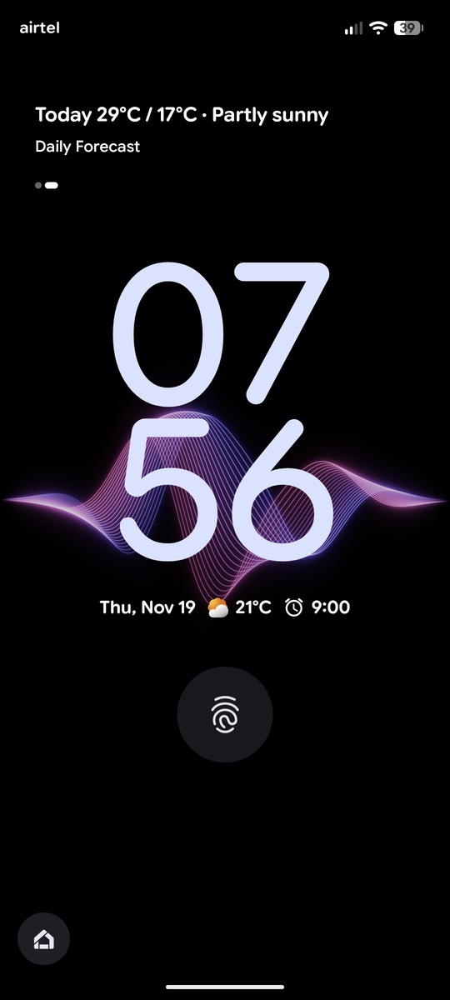
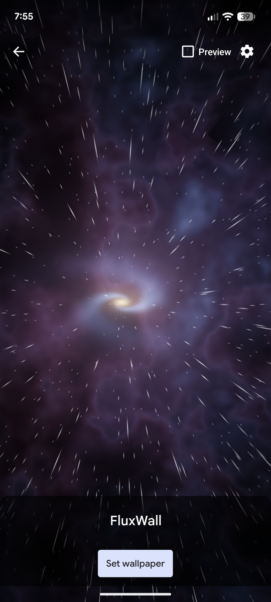
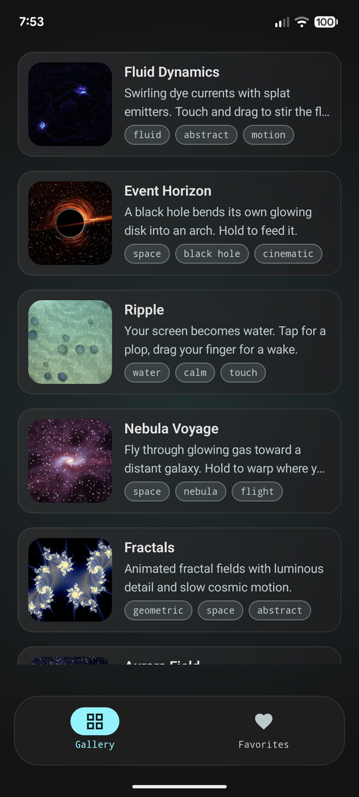

Battery-Aware Design · Smart Pausing · AMOLED Friendly
Live wallpapers that
don't drain your battery.
A moving wallpaper shouldn't cost you half your battery. Many apps eat power with hidden background services and heavy video decoding. FluxWall is engineered specifically for Android efficiency: 0% power draw when off-screen, smart FPS caps, and true AMOLED blacks.
- 0% Background Drain
- Zero Wake Locks
- OLED Black Pixel Off
- Smart 30 FPS Cap

The Honest Engineering Reality
Why poorly built wallpaper apps
drain 15% to 20% of your battery.
A lot of live wallpaper apps on Google Play are notorious for draining batteries. But the culprit usually isn't the wallpaper itself — it is sloppy app architecture: continuous video decoding, persistent background ad networks, and failure to pause when the screen is hidden.
Continuous power drain and background bloat
- Background ad networks waking your phone's CPU constantly to fetch ads
- Keeps rendering frames even when you are browsing Instagram or gaming
- Continuous MP4 video decoding running hot and wasting CPU cycles
- Holds Android partial wake locks preventing deep sleep (Doze mode)
- Bright, non-optimized color palettes that burn max power on OLED screens
Zero waste: runs only when you look
- Smart lifecycle listeners: 100% pause when screen is off or in other apps
- Zero wake locks and zero background alarms: your phone sleeps normally
- Lightweight OpenGL shaders running directly on the GPU without CPU spikes
- Deep AMOLED true blacks: pixels turn off completely on modern OLEDs
- Adjustable frame rate caps (30 FPS default) with dedicated Battery Saver mode
Intelligent Lifecycle Management
Stops completely the millisecond it leaves your screen.
Think about how you use your phone: you unlock it, glance at your home screen for 3 seconds, and tap an app icon. While you are inside Chrome, WhatsApp, or YouTube, FluxWall does not render a single frame. It pauses instantly and consumes zero milliwatts of graphics power.
- Screen Off = Zero Rendering: As soon as you lock your device, GPU execution halts.
- App Coverage Detection: Opening any full-screen app immediately suspends the animation thread.
- Seamless Resume: When you return to your home screen, the scene resumes instantly without reloading delay.

Customizable Performance
Full control over frame rates and shader detail.
Other apps force high-power GPU modes that overheat your phone. FluxWall puts performance controls in your hands. Cap animations at a gentle 30 FPS for everyday efficiency, or toggle Battery Saver mode to reduce fine procedural calculations when traveling.
- Capped by Default: Animations run capped at 30 FPS for the ideal balance of fluidity and energy savings.
- Tilt Sensor Optimization: Gyroscope and accelerometer sensors run only while the wallpaper is visible on screen.
- Battery Saver Toggle: Reduce math complexity and particle passes with a single click in the live editor.

AMOLED True Black Design
Deep space blacks that turn off OLED pixels.
On OLED and AMOLED phone screens, black pixels emit zero light and draw zero power. FluxWall's cosmic nebulae, gravitational tunnels, and fluid simulations are designed with rich deep-black contrast so your phone's display saves power naturally.
- Pixel-Off Blacks: Maximize power savings with true `#000000` background depths.
- Curated Dark Themes: Explore Infinite Tunnel, Event Horizon, Matrix Rain, and Synthwave Sun.
- Zero Eye Strain: Comfortable viewing at night and in low-light environments.

Battery Impact Comparison
FluxWall vs. Typical Wallpaper Apps:
The power draw facts.
A direct comparison of energy consumption factors across Android wallpaper types.
| Battery Metric | FluxWall | Ad-Supported Apps | Video Wallpaper Apps |
|---|---|---|---|
| Screen-Off Power Draw | ✓ 0% drain (rendering suspended) | ✕ 2–5% drain (background ad sync) | ✕ Often fails to pause decode service |
| When Inside Other Apps | ✓ 0% GPU execution (instant pause) | ✕ Background tracking active | ✕ Memory buffer held in RAM |
| Wake Locks & Background Alarms | ✓ Zero wake locks, phone enters Doze mode | ✕ Frequent wake-ups for analytics | ✕ Background caching routines |
| Rendering Architecture | ✓ Lightweight GLSL shader pipeline | ✕ Heavy un-optimized engines | ✕ Continuous H.264/H.265 video decode |
| AMOLED True Black Modes | ✓ Native deep black presets | ✕ Washed-out grey compressed colors | ✕ Compression artifacts light up pixels |
| Frame Rate Throttling | ✓ 30 FPS cap + Battery Saver mode | ✕ Uncapped or fixed high-drain | ✕ Fixed video frame rate |
| Typical Full-Day Battery Use | ✓ Less than 1%–2% total | ✕ 8%–15% total | ✕ 10%–20% total |
Frequently Asked Questions
Everything you need to know
about live wallpaper battery life.
Do live wallpapers drain battery when the phone is locked or screen is off? +
No, not with FluxWall. Android notifies the wallpaper service whenever the screen turns off or another application covers the screen. FluxWall immediately suspends GPU rendering, consuming 0% power while the wallpaper is not visible.
How much battery does FluxWall typically use during daily use? +
In standard daily testing, FluxWall typically accounts for less than 1% to 2% of total battery consumption over a full day. Because you only look at your home screen for brief moments between launching apps, active rendering time is usually less than 15 minutes a day.
Does FluxWall run background services, sync jobs, or wake locks? +
Never. FluxWall holds zero Android wake locks, schedules zero background alarms, and runs zero background synchronization tasks. When you are inside other apps or playing games, FluxWall is completely idle in RAM.
Why are AMOLED live wallpapers better for battery life? +
On OLED and AMOLED displays (found in most modern Samsung, Pixel, and OnePlus phones), true black pixels are physically turned off and consume zero milliwatts. FluxWall's space, tunnel, and fluid themes feature deep true-black backgrounds, significantly reducing display power draw.
How can I optimize FluxWall for maximum battery savings? +
You can cap the frame rate to 30 FPS in the live editor, lower particle density, enable the built-in Battery Saver option, or pick high-contrast dark worlds such as Infinite Tunnel or Event Horizon.
Can I check FluxWall's exact battery usage on my phone? +
Yes. On any Android device, open your Settings app and go to Battery → Battery Usage. You will see FluxWall listed with its exact percentage, confirming its minimal impact.